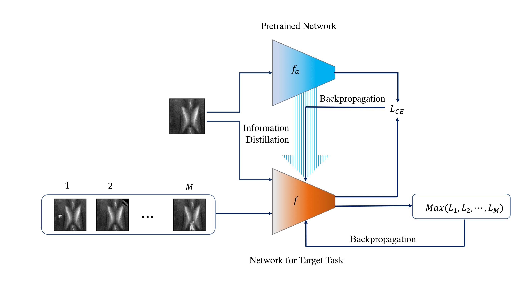
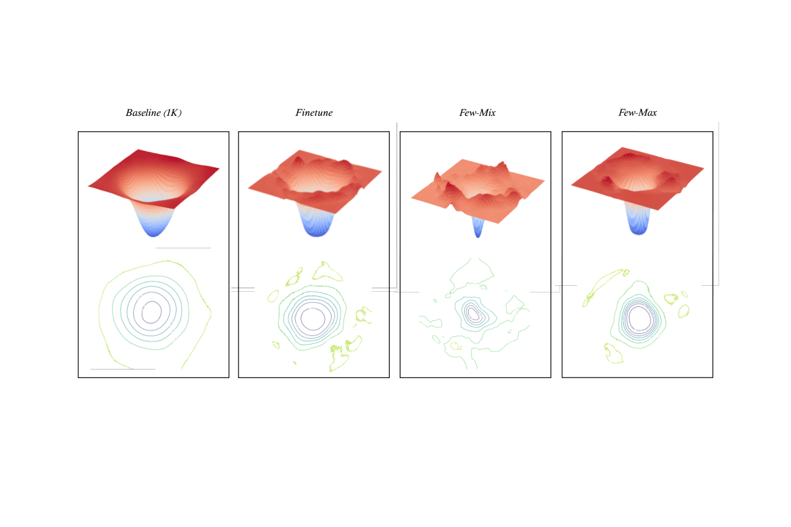
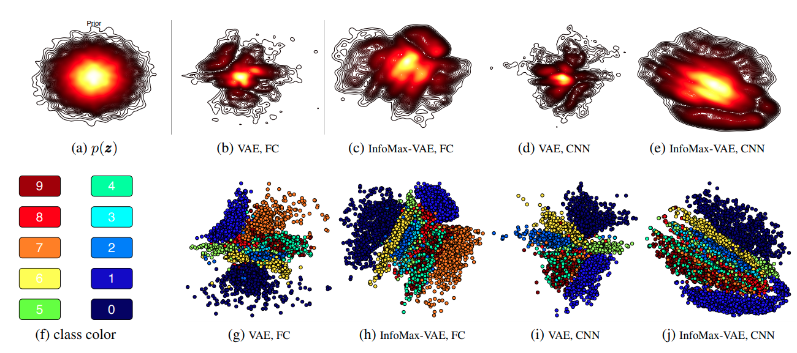
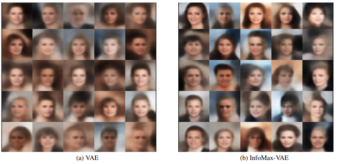
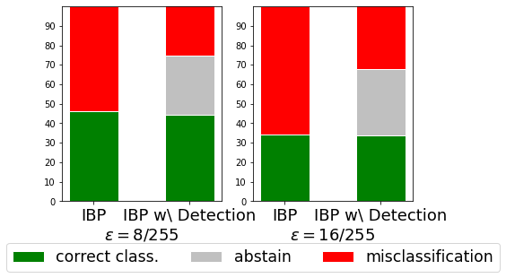

Fewshot Domain Adaptation for Learning Representations
Contrastive self-supervised learning methods learn to map data points such as images into non-parametric representation
space without requiring labels. While highly successful, current methods require a large amount of data in the training
phase. In situations where the target training set is limited in size, generalization is known to be poor. Pretraining
on a large source data set and fine-tuning on the target samples is prone to overfitting in the few-shot regime, where
only a small number of target samples are available. Motivated by this, we propose a domain adaption method for
self-supervised contrastive learning, termed Few-Max, to address the issue of adaptation to a target distribution under
few-shot learning. To quantify the representation quality, we evaluated Few-Max on a range of source and target
datasets, including ImageNet, VisDA, and fastMRI, on which Few-Max consistently outperforms other approaches.


Publications
A. Lotfi Rezaabad, S. Kumar, J. Tamir, and S. Vishwanath, Few-Max: Few-Shot Domain Adaptation for Unsupervised Contrastive Representation Learning, Submitted to Neurips 2022.
Explicit Reprepresentation Learning with Mutual Infomation Maximization
In this work, we propose a simple yet powerful class of VAEs that simultaneously result in meaningful learned
representations. Our solution is to combine traditional VAEs with mutual information maximization, with the goal to
enhance amortized inference in VAEs using Information Theoretic techniques. We call this approach InfoMax-VAE, and such
an approach can significantly boost the quality of learned high-level representations. We realize this through explicit
maximization of information measures associated with the representation. Using extensive experiments on varied datasets
and setups, we show that InfoMax-VAE outperforms contemporary popular approaches.


Publications
A. Lotfi Rezaabad, and S. Vishwanath, Learning Representations by Maximizing Mutual Information in Variational
Autoencoders, 2020 IEEE International Symposium on Information Theory, ISIT 2020.(IEEE) (ArXiv)
Large-Scale Graphs Embedding
We build off of semi-implicit graph variational auto-encoders to
capture higher order statistics in a low-dimensional graph latent representation. We incorporate hyperbolic geometry in
the latent space through a Poincare embedding to efficiently represent graphs exhibiting hierarchical structure. To
address the naive posterior latent distribution assumptions in classical variational inference, we use semi-implicit
hierarchical variational Bayes to implicitly capture posteriors of given graph data, which may exhibit heavy tails,
multiple modes, skewness, and highly correlated latent structures. We show that the existing semi-implicit variational
inference objective provably reduces information in the observed graph. We show that the inclusion of this regularization term in
conjunction with the oincare embedding boosts the quality of learned high-level representations and enables more
flexible and faithful graphical modeling.
-1.png)

Publications
A. Lotfi Rezaabad , R. Kalantari, S. Vishwanath, M. Zhou, and J. Tamir, Hyperbolic Graph Embedding with Enhanced Semi-Implicit Variational Inference, Proceedings of The 24th International Conference on Artificial Intelligence and Statistics, 2021. (PMLR)
Provably Robust Classification and Detection of Adversarial Examples

Publication
F. Sheikholeslami, A. Lotfi Rezaabad, and Zico Kolter, Provably robust classification of adversarial examples with detection, ICLR 2021. (OpenReview)
Patenet
F. Sheikholeslami, Zico Kolter, and A. Lotfi Rezaabad, Method and System for Probably Robust Classification With Detection of Adversarial Examples
, US Patent App. 17/035,203, 2022. (Patent)
5G Resource Allocation
Publications
A. Lotfi Rezaabad, H. Beyranvand, J. A. Salehi, and M. Maier, Ultra-Dense 5G Small Cell Deployment for Fiber and Wireless
Backhaul-Aware Infrastructures, IEEE Transaction on Vehicular Technology, vol. 67, no. 12, pp. 12231-12243. (IEEE)(ArXiv)